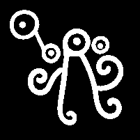

IMAGEN IN SITU

Créditos de la fotografía: Leonardo Páez Rodríguez, octubre de 2010.
DIBUJO EN NEGATIVO

Dibujo en negativo: Leonardo Páez Rodríguez, octubre de 2010.
IMAGEN IN SITU
Créditos de la fotografía: Leonardo Páez Rodríguez, octubre de 2010.
DIBUJO EN NEGATIVO

Dibujo en negativo: Leonardo Páez Rodríguez, octubre de 2010.
Motivo compuesto, curvilíneo, de evocación antropomorfa. Para un observador contemporáneo, el componente central puede sugerir una figura humana frontal con cabeza, tronco y cuatro extremidades. Esta clasificación expresa una semejanza perceptiva actual y no atribuye identidad, función ni significado originario al diseño.
El conjunto se organiza alrededor de un componente central de eje predominantemente vertical. En el extremo superior de este componente se observa un círculo con punto central. Desde el sector inferior del círculo descienden dos líneas largas, ligeramente divergentes y abiertas entre sí, que terminan en espirales o volutas. A cada lado se dispone una prolongación curvilínea más corta, también rematada en espiral. En el sector superior derecho aparece un círculo menor con punto central. Hacia el sector superior izquierdo se ubica una unidad asociada formada por dos círculos de distinto diámetro, ambos con punto central y enlazados mediante un segmento oblicuo corto. La composición combina formas circulares, líneas curvas y cuatro terminaciones espiraladas; presenta un equilibrio aproximado en el componente central y asimetría en los elementos circulares superiores.